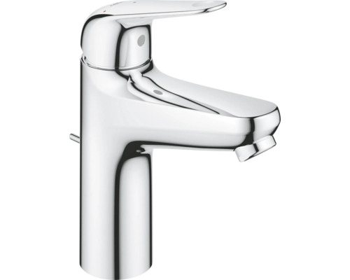
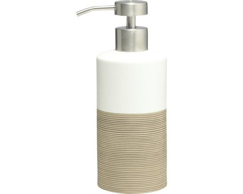
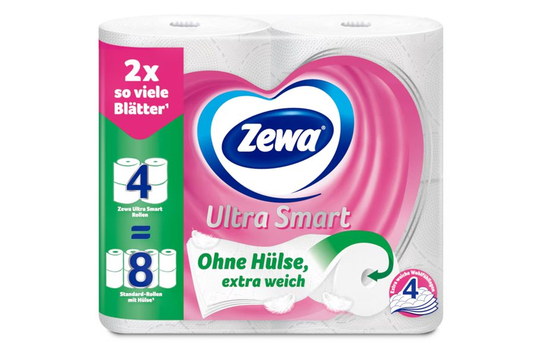
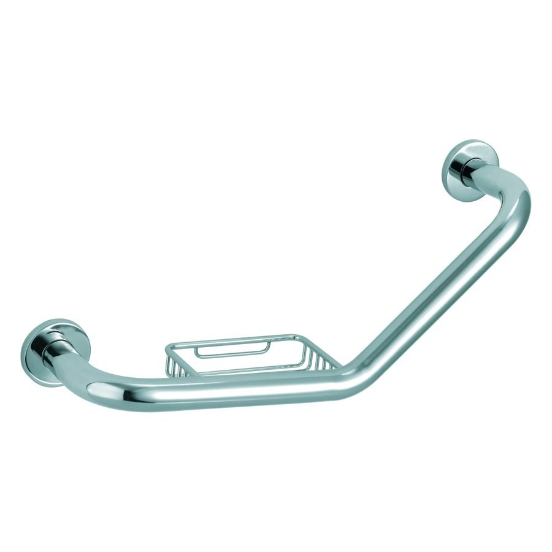
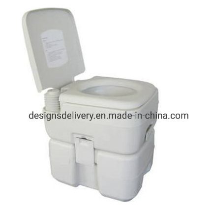
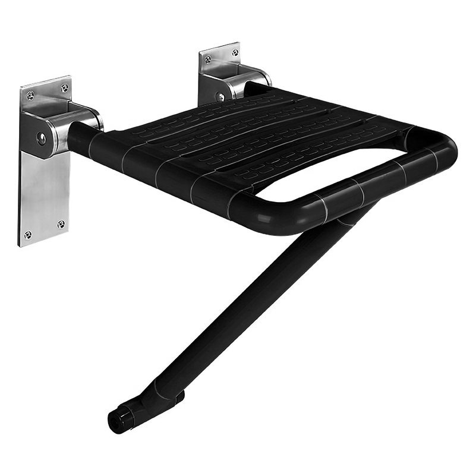

Illustration similar – shows the product type.
WC cistern repair kit: dual-flush drain valve and inlet (fill) valve
Complete flush mechanism for close-coupled cisterns: dual push button with drain valve and side-entry inlet valve.
The kit replaces the worn internal mechanism of a WC cistern: drain valve with dual-flush push button (full and eco flush) and side-connected inlet valve with float. It restores leaking cisterns, running water and defective seals without replacing the ceramic and lowers water consumption. Buyers look for exact fit (drain opening, 3/8 inch inlet connection, installation height), tight rubbers, corrosion-free fixing and adjustable flush volume. As a part in contact with drinking water, the inlet valve must meet the German requirements for plastics in contact with drinking water.
Technical data
| Drain valve | Dual flush, double push button, top button |
|---|---|
| Inlet valve | Side inlet |
| Design | Two-piece, specification 4 inch |
| Packaging | Polybag |
| Customs tariff number (HS) | 84818099 |
EU standards and regulations
EN 14055WC and urinal flushing cisterns: requirements and test methods (tightness, flush volume)EN 1717Protection against pollution of potable water (backflow protection of the inlet valve)KTW-BWGL (UBA)Assessment basis for plastics and organic materials in contact with drinking water(EC) 1907/2006(EU) 2023/988GPSR: EU responsible person, traceability, warnings
Goes well with

More products in this category












